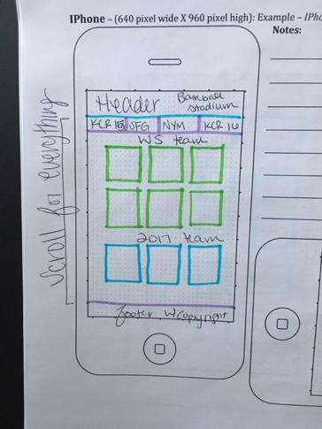
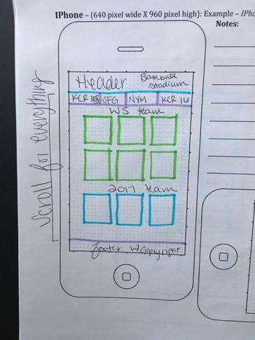

Site Purpose
This site is to show people the teams behind the 2014 and 2015 World Series.They will be able to see all of the stats for these players that were in the opening lineup for game 1, and they will see the stats for the opening line up for game 1 of the 2017 year, but those stats will be from 2016
Target Audience
The target audience is literally all of America, it is America's favorite pass time. But I know we need to be more specific, so the target audience is adults aged 20-30 who are obsessed with baseball players, especially those that have played in the world series. In that age bracket, income doesn't matter, everyone can love baseball and keeping up with stats and even going to games is really inexpensive. The audience is going to be searching for information quickly. Instead of having to search the internet for the Royals 2015 World Series player stats, they can just come to this website and grab all of the important stats at once. The majority of the audience is going to live in either: Kansas City, New York, or San Francisco. These places are where each of the teams are located. It will mostly be used whenever the user is wondering what the players stats were. Or if they quickly want to find a picture of a player.
Persona
Persona: Baseball Fan
Photo:
Name: Michelle McKnight
Job Title: Social Media Marketer
Demographics:
- Early 20's
- No Children
- Attends lots of baseball game
JSON
Practically every page but the home/index page uses JSON. The Royals-2014, Royals-2015, Mets, and Giants all use JSON to populate the stats when you click on the image.
Video
The video is located on the home/index page.
Wireframes
 
